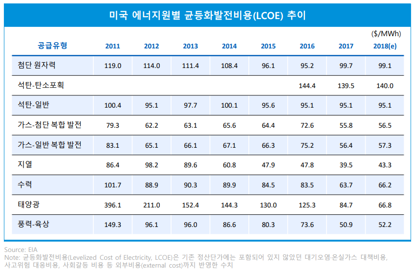
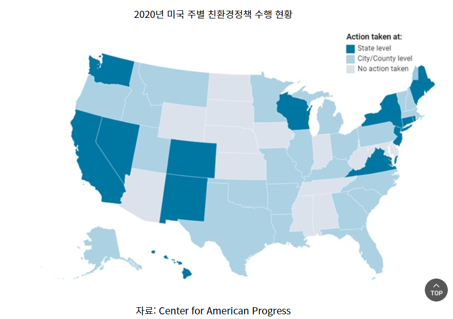

MIT Technology Review
탈탄소화
<각 나라별 정책>
3. 미국
“80% 감축(2005년 대비)” 에너지 부문 탈탄소화, 산림 부문에 의한 흡수원 증대, Non-Co2 배출 저감
① 에너지 부문 탈탄소화
경제성의 이유로 미래 에너지 트렌드로 탈탄소화가 지목되었고 기술발전으로 인하여 신재생에너지 발전비용이 빠르게 하락하고 있다. 국제에너지기구(IEA)에 따르면 2017년 기준 태양광 균등화발전비용은 과거 5년간 65% 감소했으며, 육상풍력은 151%, 해상 풍력은 25% 하락했다. 발전소 규모 태양광의 글로벌 평균 LCOE는 2030년까지 2017년 가격보다 40% 낮아져 MWh 당 70달러 이하로 하락할 전망이다.이러한 재생에너지 발전비용 감소의 주요 원인은 초기 투자비 감소이다. 태양광은 세계 평균 초기 투자비용이 2010년 이후 70%가량 감소했다. 풍력 또한 기술 성숙과 터빈 크기 증가로 최대 발전용량이 커지고 발전비용은 감소했다. 이러한 결과 독일은 2018년 상반기에 전체 전력 생산에서 재생에너지가 차지하는 비중이 석탄 비중을 추월했으며, 국내에서도 재생에너지 비중이 6%를 넘어섰다. 미국 트럼프 행정부는 국가 차원에서는 신재생에너지 확대를 위한 정책목표를 제시하지 않고 있지만, 주정부 차원에서 전개되고 있다. 예를 들어, 캘리포니아 주는 2020년부터 신축 주택과 저층 아파트에 태양광 패널 설치를 의무화하는 내용을 담은 ‘2019년 건물에너지 효율 기준(2019 Building Energy Efficiency Standards)’을 만장일치로 채택하였다. 또한, 2045년까지 해당 주 내 전력의 100%를 재생에너지로 충당하도록 하는 법안을 마련하고 있다.

② 친환경정책 수행 현황
캘리포니아, 뉴욕, 워싱턴 주는 현재 미국에서 가장 활발하게 재생에너지 정책을 펴고 있는 대표적인 주로 꼽힌다. 캘리포니아주는 2018년 클린에너지법(The 100 Percent Clean Act of 2017, SB100)을 발효했다. SB100은 ‘탄소 배출 없는 발전’을 골자로, 오는 2045년까지 모든 에너지 공급원을 청정에너지로 대체해 100% 전력 수요를 충당하는 것을 목표로 한다. 뉴욕주 공공서비스위원회는 지난 10월, 2030년까지 뉴욕주에 공급하는 전력의 70%를 재생에너지로 전환하는 로드맵을 제시했다. 해상풍력발전을 통해 2030년까지 2400메가와트의 전력을 생산하고 2035년까지 이 규모를 9000메가와트까지 끌어올리겠다는 계획이다. 또, 2040년에는 탄소배출 제로를 목표로 하고 있다. 지난 2019년 워싱턴주도 클린에너지전환법(Clean Energy Transformation Act, 이하 CETA)을 통과시키고, 2040년까지 클린에너지 도입을 통한 탄소제로 계획을 시행한다.

③ 전망
미국의 탈탄소사회 조성은 연방정부의 리더십 부재로 성장에 한계가 있었으나 바이든 당선인의 취임을 계기로 새로운 성장 모멘텀을 확보할 수 있을 것으로 보인다. 다만 다수의 이해관계자 및 보수층의 환경정책에 대한 거부감은 극복해야 할 과제이며, 일부정책 수정 및 속도조절 가능성도 있다. 하지만 ‘탈탄소’는 미국 사회가 장기적으로 지향하는 궁극적 목표점이라는 사실은 변함없다. M사 애널리스트는 인터뷰를 통해 “사실상 대통령이 누가 당선되든 신재생 에너지는 대세가 됐다”며 “단가 하락과 지속가능성 때문에 풍력, 태양광 등은 일상에 머물게 될 것”이라고 전망했다. 지난 1월 미 에너지정보청이 발간한 2050 에너지 전망보고서(annual energy outlook 2020 with projections to 2050)에 따르면 미국의 신재생에너지 의존도는 2019년 19%에서 2050년 38%까지 증가할 것으로 예상된다. 신재생에너지 형태별로는 태양광이 46%로 가장 높았고 풍력(33%), 수력(14%), 지력(3%) 순으로 나타났다.
참고문헌1
참고문헌2